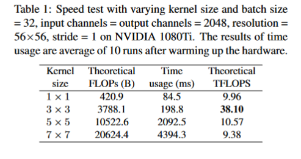
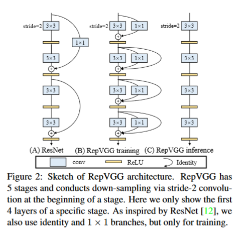
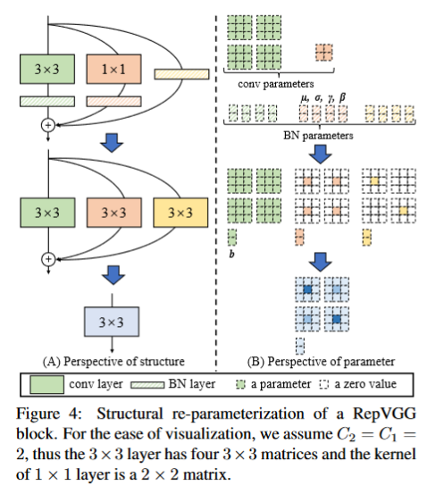

前言
作者的这篇论文让我眼前一亮，主要还是因为最近看的论文的模型设计都是在backbone的基础上设计一些复杂的模块然后添加到模型中去。而作者的这篇论文给我一种大道至简的感觉，在模型设计上作者只是用了3x3卷积，1x1卷积，以及relu激活函数，甚至连原本VGG中的pool都没有使用，模型的设计简洁但有力，在ImageNet上达到了超过80%的准确率，达到了了SOTA水平，并且运行速度显著增加。其模型的核心在于结构重参数化。
问题引入
复杂的卷积网络能带来更高的精度，但其中的缺点也十分的明显：
- 复杂的多分支设计使得模型难以实现和定制，并且导致推理速度和内存的利用率降低。
- 一些组件，像深度卷积，虽然降低了模型的FLOPs，但是在实际运行中可能并不能比那些老牌的模型更快。这主要是因为这些组件增加了内存的访问量。
因此，目前很多的模型还是以VGG以及ResNet为backbone设计的。
构建RepVGG
优势
在正式介绍RepVGG之前，先来介绍一下它的优点：
- 该模型类似于VGG，没有任何的分支，就是说对于每一层它的输入都是前一层的输出，它的输出都是后一层的输入。感觉就像一链表。
- 模型的主体仅使用3x3卷积和ReLU。
- 具体架构的实例化是简洁的。
为了快速、省内存和灵活性
前面提到目前常用的backbone模型有VGG和ResNet，但为什么作者选择了VGG呢？主要是考虑了三个方面：
- 快速：VGG中只是用了3x3卷积，而3x3卷积是非常快的。在GPU上，3x3卷积的计算密度是1x1卷积和5x5卷积的四倍。同时VGG的单路架构非常块，因为并行度高。
- 省内存：VGG的单路架构省内存。而ResNet的shortcut虽然不占计算量，但却增加了一倍的显存占用。
- 灵活性好：单路架构的灵活性更好，容易改变各层的宽度，方便剪枝等操作。
结构
既然要让模型有更高的性能，同时还有快速的推理速度，作者就提出了一个解决方案，那就是在模型训练时模型具有多分支结构，能提高模型的性能；而在模型推理时利用结构重重参数化技术使模型转换成单路结构，使得模型的推理速度更快。
基于上述分析，作者提出了RepVGG的结构：

根据上图就可以写出训练时每一层的输出公式：
其中，$f(\cdot)$ 表示3x3卷积分支的操作，$g(\cdot)$ 表示1x1卷积分支的操作。
单看这给结构就给人一种简约的感觉，剩下的难题就是如何把多分支的训练模型转换成单路的推理模型，也就是如何设计结构重参数化。
结构重参数化
话不多说，先给出具体的流程图：

从图中可以看出，结构重参数化主要分为两步：一是融合卷积和BN层，二是各分支参数相加。
融合卷积层和BN层
这一步的作用，我个人认为主要是为了把各分支的参数的形状统一，方便后续各分支参数相加。
首先，令输入为$X$，卷积层的参数为$W$，这样卷积层的公式就是：
上式中，$*$为卷积算子，这里的卷积层没有偏置$b$，有偏置计算过程也是一致的。
在BN层中，令$\mu,\sigma,\gamma,\beta$分别为BN层的均值、标准差、学习缩放因子以及偏差。如此一来，BN层的公式为：
把卷积公式带入BN层公式中，可得：
令融合后的参数$W’$和$b’$分别为 ：
显然，
上式的形式与卷积层的公式一致，也就是把卷积层和BN层等效成了一个卷积层。这也是融合卷积层和BN层的作用。
这步融合操作作者给出的代码如下：
1 | def _fuse_bn_tensor(self, branch): |
对于3x3卷积的分支，融合3x3卷积和BN层后，获得的参数结构与3x3一致。
对于1x1卷积分支，1x1卷积相当于一个周围为0，中心有数值的3x3卷积，因此融合后的卷积核也是周围为0，中心有数值。
对于identity层，也就是原始输入，也可以转化成3x3的卷积层。具体地，identity可以看成1x1卷积层，每个卷积核中只有一个通道的数值为1，其他的全为零，这样经过卷积后，输入仍等于原始输入。有了1
x1卷积再转化成3x3卷积就容易了。最终融合后的参数仍是3x3卷积的形式。
多分支转化为单路
上一步把各分支的参数都重新化为了3x3卷积的样子，这样只要把各分支的参数逐元素相加就可以得到结构重参数化后的参数了，这个参数也是3x3卷积的样子。如此一来，多分支结构就被转化成了单路结构。
总结
RepVGG是一项在backbone上的工作，它那简洁而有力的结构，真不错。 😊